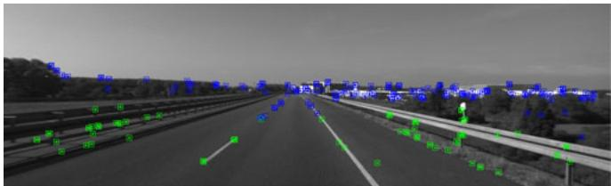
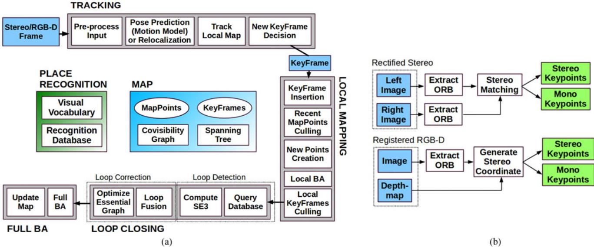
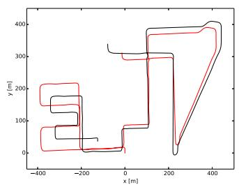
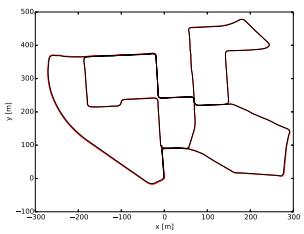

阶段 C · 视觉主干 / Lesson 0044
ORB-SLAM2（2017）：绝对尺度与工程标杆
双目与深度，把单目的「尺度病」一次性根治 📏
🎯 主题：单目 / 双目 / RGB-D 通吃的开源系统
👥 作者：Mur-Artal & Tardós
📅 2017 · ORB-SLAM2: An Open-Source SLAM System for Monocular, Stereo, and RGB-D Cameras
本节目标 读完你应该能：说清 ORB-SLAM2 相对 ORB-SLAM 多出的「绝对尺度」从哪来；讲清双目深度如何用水平极线搜索 + SSD 亚像素求解；区分近点 / 远点（40 倍基线分界）及其在 BA 中的不同待遇；抄准三种传感器下 BA 的写法；并说出它为何成为工业首选。
和前面课程怎么接 本篇定位是「把 ORB-SLAM 的尺度病根治掉」。直接收束 0024 VO 教程 的「单目尺度不可观」——双目 / 深度让尺度直接可观，于是闭环从 Sim(3) 退化成 SE(3)；与 0026 SGM 对照：ORB-SLAM2 只做水平 1D 极线 + 稀疏特征匹配，是「稀疏立体匹配」的极简版；与 0019 BA 接：它的 BA 是「混合约束 BA」（同一目标函数同时含 2 维与 3 维残差）。
1. 相对 ORB-SLAM 的增量：绝对尺度从哪来
ORB-SLAM2 是「在 ORB-SLAM 之上的增量系统」——论文 §III 直接说「we refer the reader to our monocular publication」。它新增的能力，全都围绕一句话：双目 / RGB-D 让尺度变成可观测量 。
单目那套脆弱的 SfM 初始化（等视差、再三角化）和 sim(3) 尺度漂移纠正，在双目 / RGB-D 下都不需要了：单帧即可建点，尺度由硬件基线直接给出。
初始化更快更稳 ：第一帧就能建图，不再需要「跑一段、等视差」。这对高速低帧率场景（如 KITTI 01 高速路）是决定性的——单目在那里直接失败，双目成功。双目深度估计 ：只对显著特征在水平极线上搜，用 SSD + 亚像素细化，并做网格均匀化（下一节细讲）。近点 vs 远点 ：用深度 $d$ 与立体基线的倍数关系区分；远点深度不可信，但方向仍有用，所以「远点几乎不清除」。
论文给出的四条 contributions：① 三模态（单目 / 双目 / RGB-D）开源系统；② BA 比 ICP / 直接法更准且更省（不需 GPU）；③ 近 / 远点立体组合；④ 定位模式（map reuse，关掉建图只做轻量定位）。
2. 双目深度估计与近点 / 远点
双目极线搜索：为什么只搜一条水平线
双目相机做了立体校正 （stereo rectification）后，两个成像面共面、光轴平行、且极线落在同一行。于是左图里的某个特征，在右图里一定出现在同一行 上——只在那条水平线上做 1D 搜索即可，又快又准。匹配用 patch correlation 做亚像素细化。
双目极线搜索：只搜一条水平线
左相机
右相机
真实杯子
特征点（左）
水平极线（只在这条线上搜）
匹配点（右）
视差 = 左右横坐标差
已做立体校正：极线 = 水平线，所以只需 1D 搜索（对照：未校正时极线是斜的，见右下）
未校正→斜极线
这张图在画什么： 一套真实的双目相机（左右两个镜头）对着一个真实杯子。杯子上红点投影到左图是一个特征点；投影到右图后，它必定落在同一条水平极线 上，于是只在这条水平线上做 1D 搜索找匹配。怎么看这张图： ① 紫色虚线是两个相机看向同一个 3D 点的投影线；② 绿色粗线就是右图上的水平极线，匹配点（红）就落在上面；③ 右下灰色斜线说明「如果不做立体校正，极线是斜的，就得 2D 搜」——这正是必须先校正的原因。要记住的一句话： 立体校正把极线压成水平，双目匹配从 2D 退化成 1D，又快又省。
近点 vs 远点：40 倍基线分界
论文 §III-A 把立体关键点分成两类：深度 小于 40 倍立体基线 的叫近点（close），更远的叫远点（far）。为什么用「相对基线的倍数」而不是绝对距离？因为可可靠三角化的深度范围随基线长度变化 ——KITTI 基线约 54 cm，40 倍 ≈ 21.6 m；EuRoC 基线约 11 cm，40 倍 ≈ 4.4 m。同一个阈值在两个数据集对应物理距离差 5 倍 ，所以必须用相对倍数。
关键结论：远点深度不可信，但方向仍有用，所以远点几乎不清除。 远点贡献于估计朝向，但对平移和尺度提供的信息很弱。
近点视差大，远点视差极小（同一水平基线）
左相机
右相机
立体基线 b
近处花瓶
视差大
远处楼
视差极小
近点 d < 40b（深度可靠）
远点 d ≥ 40b（深度弱，不清除）
↑ 分界 = 40 × 基线
这张图在画什么： 同一条水平基线上的一对双目相机，分别看近处花瓶与远处楼。近处物体投影到左右相机的横坐标差（视差）很大；远处物体视差极小。怎么看这张图： ① 红线是近点（花瓶）的两条投影线，夹角大、视差大；② 绿线是远点（楼）的投影线，几乎平行、视差极小；③ 下方数轴标出「深度 $d$ 与基线 $b$ 的 40 倍」分界：左蓝区近点深度可靠，右绿区远点深度弱但不清除。要记住的一句话： 视差小的远点深度不可信、但方向仍有用，所以「远点几乎不清除」。

原图注（Fig. 3）： Tracked points in KITTI 01. Green points have a depth less than 40 times the stereo baseline, while blue points are further away… Far points contribute to estimate orientation but provide weak information for translation and scale.（KITTI 01 跟踪到的点；绿点深度小于 40 倍基线，蓝点更远；远点有助于估计朝向但对平移和尺度信息很弱。）怎么看这张图： ① 满屏点被分成绿（近）与蓝（远）两色；② 绿色密集在近处车辆 / 路沿，蓝色铺在远处建筑与天空；③ 它把「近点 / 远点」从抽象判据变成了肉眼可辨的实拍图。
3. 三种传感器下的 BA：单目 vs 双目 / RGB-D
ORB-SLAM2 的 BA 目标函数，在同一套框架里容纳了三种观测。核心是投影函数 ：单目投影 $\pi_m$ 输出 2 维，双目 / RGB-D 投影 $\pi_s$ 多一维——把右图（或虚拟右坐标）也写进残差。
★ $\pi_s$ 的第三行就是立体项 ：它把「观测到的深度」也作为一条约束直接塞进 BA。于是双目 / RGB-D 一次优化就能定尺度。单目则只有 2 维重投影误差，且要额外处理尺度 $s$ 的退化。
RGB-D 用一个巧妙把戏：用已知深度把像素合成一个「虚拟右坐标」$u_R=u_L-f_x b/d$（$b\approx 8$ cm），于是深度不确定度就等价于虚拟右坐标的不确定度，直接进 $\Sigma$。
Local BA 的写法：优化共视关键帧与可见点，而「不在局部窗口但看到这些点的关键帧（集合 $\mathcal K_F$）只贡献代价、位姿固定」。Full BA 则是「除原点关键帧（消 gauge）外全优化」的特例——闭环后由第 4 线程执行。
互动判断
ORB-SLAM2 里双目 / RGB-D 的投影函数 $\pi_s$ 比单目 $\pi_m$ 多出来的第三行，代表什么？
立体观测项
尺度因子 s
三种传感器，同一场景各得到什么
单目
只有方向（射线）
尺度未知、需 sim(3)
双目 / RGB-D
方向 + 尺度
一帧建点、尺度可观
RGB-D（额外）
方向 + 尺度
+ 稠密深度图
（格内为简化示意：单目只有射线、双目多一根尺度轴、RGB-D 还多一片深度面）
这张图在画什么： 三格对照——单目只给出方向（一条射线，尺度未知）；双目 / RGB-D 多一根尺度轴，一帧就能定尺度；RGB-D 在这之外还多一片稠密深度面。怎么看这张图： ① 左格三角是「射线」，长度未知；② 中格三角 + 红竖线＝「方向 + 尺度」，红竖线就是可靠深度；③ 右格多一个蓝色方块＝稠密深度图。要记住的一句话： 尺度从「不可观」到「可观」，是 ORB-SLAM2 根治单目尺度病的根本所在。
4. 工程化：为什么它成为工业首选
ORB-SLAM2 之所以成为工业界事实标准，靠的是四条：
① 真正开源 代码公开、可商用改造；同一套代码跑单目 / 双目 / RGB-D，不用为每种传感器重写。
② 多传感器通吃 统一的混合约束 BA，传感器只是「输入预处理」：跟踪线程先把双目 / RGB-D 转成统一的 Stereo / Mono Keypoints（见 Fig.2(b)），后续模块完全不关心传感器。
③ 单核 CPU 也能跑 论文实验在桌面 i7-4790 上实时；多数序列每帧耗时低于帧间隔。不依赖 GPU。
④ 第 4 线程做 full BA 闭环后派生一个独立线程跑 full BA（Fig.2(a) 的 Update Map / Full BA 框），不阻塞实时跟踪。full BA 算完，沿生成树把修正传播给未优化的帧与点。

原图注（Fig. 2）： ORB-SLAM2 is composed of three main parallel threads… which can create a fourth thread to perform full BA after a loop closure… (a) System threads and modules. (b) Input preprocessing.（三主线程 + 闭环后可派生第 4 线程做 full BA；(a) 线程与模块，(b) 输入预处理。）怎么看这张图： ① (a) 与 ORB-SLAM Fig.1 几乎同构，但多出 Update Map / Full BA 框，且回环节点是 Compute SE3（不是 Sim3）；② (b) 清晰画出两条预处理管线：Rectified Stereo 与 Registered RGB-D，都输出 Stereo / Mono Keypoints 两个绿框——这就是「与传感器无关」的工程落点。
5. 实验数字
平台：i7-4790 桌面机 + 16 GB。每条序列跑 5 次报中位。挑硬数字：
KITTI（双目，11 序列，10 Hz） ：相对误差 $t_{rel}$ 普遍低于 1%。如序列 00 为 0.70% / 1.3 m（绝对）、序列 03 0.71% / 0.6 m；序列 01（高速路）平移较差但朝向仍达 0.21 deg/100 m（靠大量远点保住朝向）。EuRoC（双目，11 序列，20 Hz，基线约 11 cm） ：平移 RMSE 多在 0.02–0.05 m；V2_03_difficult 因严重运动模糊丢失跟踪（作者指出用 IMU 可解，即 VI ORB-SLAM）。TUM RGB-D（7 序列） ：ORB-SLAM2 普遍优于 ElasticFusion / Kintinuous / DVO-SLAM / RGBD-SLAM。如 fr1_desk 0.016 m、fr2_xyz 0.004 m、fr3_office 0.010 m。每帧耗时（Table IV，均值） ：Tracking 总耗时 EuRoC 41.66 ms、KITTI 49.47 ms、TUM 25.58 ms——均低于各自帧间隔，实时。其中 Stereo Matching 分别为 11.26 / 15.51 / 0.02 ms（RGB-D 走虚拟右坐标故近零）。
最有说服力的对照是 KITTI 08：左为单目 ORB-SLAM（严重尺度漂移，尤其转弯），右为 ORB-SLAM2 双目（贴合真值、无尺度漂移）。

原图注（Fig. 5，左）： Estimated trajectory (black) and ground truth (red) in KITTI 08. Left: Monocular ORB-SLAM [1]… suffers from severe scale drift… In contrast, the proposed stereo version is able to estimate the true scale of the trajectory and map without scale drift.（左：单目 ORB-SLAM 有严重尺度漂移，尤其转弯处；右：双目能估计真实尺度且无漂移。）怎么看这张图： ① 左图（单目）黑线明显偏离红真值、且在转弯处扭掉；② 右图（双目）黑线贴合红真值；③ 这张左/右并排就是「双目/RGB-D 带来什么」最直接的可视化回答。

原图注（Fig. 4）： Estimated trajectory (black) and ground truth (red) in KITTI 00, 01, 05, and 07.（KITTI 00/01/05/07 的估计轨迹（黑）与真值（红）。）怎么看这张图： ① 四幅里黑线基本贴合红线，说明双目 ORB-SLAM2 在城区序列上很准；② 注意这是双目结果，没有单目那种系统性尺度漂移；③ 可与 Fig.5 左的单目结果对照看差距。
6. 局限与衔接
论文没有独立的 Limitations 小节，但正文明确承认这些边界：
① V2_03_difficult 失败 因严重运动模糊丢失跟踪（§IV-B）；作者指出该序列用 IMU 可处理。
② KITTI 01 平移略差 高速 + 低帧率导致可跟踪近点很少；靠大量远点保住朝向精度（§IV-A）。
③ 回路未必能检测到 KITTI 09 的回路只在末尾极少数帧发生，不总能检测到（§IV-A）。
④ 单目模式的固有缺陷 若只用单目，深度不可观、尺度未知、启动需多视图、尺度漂移、纯旋转可能失败——这些双目/深度只是绕开，并未消除。
★ 收束一条线： 本课把 0024 VO 教程的「单目尺度不可观」用工程手段根治——双目 / 深度让尺度直接可观，闭环从 Sim(3) 退化成 SE3（对比 ORB-SLAM Fig.1 的 Compute Sim3 与 ORB-SLAM2 Fig.2 的 Compute SE3 两个框）。与 0026 SGM 形成对照：ORB-SLAM2 只做水平 1D 极线 + 稀疏特征匹配，是「稀疏立体匹配」极简版；与 0019 BA 接：它的混合约束 BA 是「BA 如何容纳异构观测」的现成范例。下一课 ORB-SLAM3 会进一步把「双目 / 深度 + IMU + 多地图」全塞进来，并偿还第二季的悬念⑤（IMU 初始化）。
互动判断
为什么 ORB-SLAM2 把回环优化从 ORB-SLAM 的 Sim(3) 改成 SE(3)？
尺度已可观
因为 SE3 更省事
课后练习
ORB-SLAM2 相对 ORB-SLAM，「绝对尺度」是从哪来的？这解决了单目的哪两个毛病？
展开查看答案 来自双目/RGB-D 的硬件基线（或深度）：单帧即可三角化出带尺度深度的点，尺度直接可观。它解决了单目的「地图/轨迹尺度未知」和「启动需多视图等视差」以及「尺度漂移需 sim(3) 纠正」三个毛病。
为什么双目极线搜索可以只在一条水平线上做？为什么必须先做立体校正？
展开查看答案 立体校正后两成像面共面、光轴平行、极线落在同一行，所以左图某特征在右图必在同一条水平线上，只需 1D 搜索。若不校正，极线是斜的，就得 2D 搜索且匹配更不可靠。
近点 / 远点的分界为什么用「深度 < 40 倍基线」而不是绝对距离？远点为什么「几乎不清除」？
展开查看答案 因为可可靠三角化的深度范围随基线变：KITTI 54 cm→21.6 m，EuRoC 11 cm→4.4 m，同阈值物理距离差 5 倍，故必须用相对倍数。远点视差极小、深度不可信，但方向仍可约束朝向，所以保留而不清除。
双目/RGB-D 的投影函数 $\pi_s$ 比单目 $\pi_m$ 多出来的第三行，在 BA 里起什么作用？
展开查看答案 第三行是立体项（右图/虚拟右坐标的水平观测），把观测到的深度也作为一条残差约束直接写进目标函数，因此双目 BA 一次优化就能定出尺度，无需额外的 sim(3) 尺度纠正。
为什么 ORB-SLAM2 成为工业首选？举出至少三条理由。
展开查看答案 ① 真正开源、可商用改造；② 同一套代码多传感器（单目/双目/RGB-D）通吃，跟踪线程把传感器统一成 Stereo/Mono Keypoints；③ 单核 CPU 实时、不依赖 GPU；④ 闭环后第 4 线程跑 full BA 不阻塞实时跟踪。